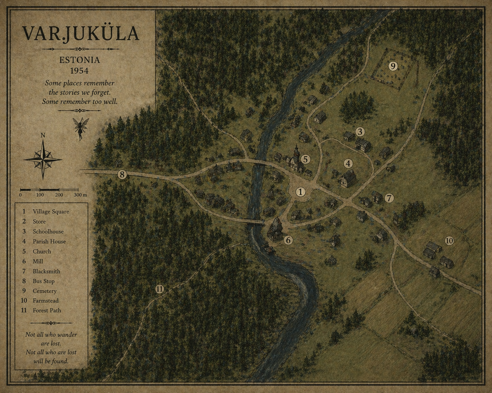

Life in the Village
Quiet routines. Watchful eyes.
Glamour
Old songs still hold power.
Banality
Fear creeps into daily life.

Varjuküla
Key Locations
- The Forest Edge
- The River
Quick Select
Old songs, whispered softer each year.
Quiet routines. Watchful eyes.
Old songs still hold power.
Fear creeps into daily life.
